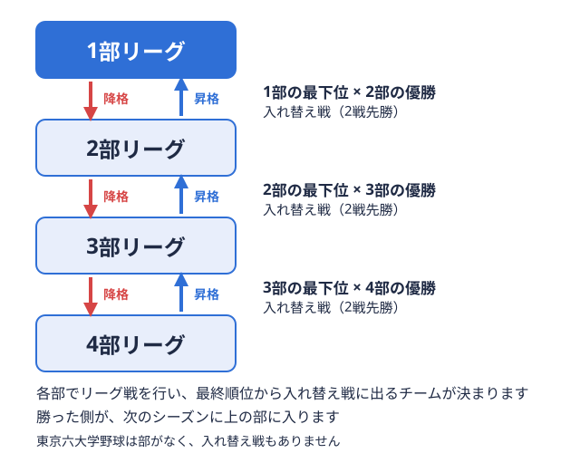

キャリアガイド 2026-11-17
東京六大学・東都大学野球、出身リーグの違いは転職でどう評価される？知名度より伝わる自己PRへの変え方
「自分は東京六大学ほどの知名度がないリーグの出身だから、転職で野球経験をアピールしにくいのではないか」「東都大学野球は部が分かれているので、1部以外だと評価されないのでは」——大学野球部出身のOB・OGから、こうした不安を聞くことがあります。結論から言えば、転職市場で重視されるのは出身リーグそのものの知名度ではなく、その環境で何を経験し、どう語れるかです。この記事では、東京六大学野球連盟・東都大学野球連盟それぞれの仕組みの違いを踏まえながら、出身リーグ・所属部を問わず評価される自己PRの考え方を整理します。
転職市場で「出身リーグの知名度」はどこまで評価されるのか
採用担当者が見ているのは大学名やリーグ名そのものではない
中途採用の選考で問われるのは、学生時代の実績そのものではなく、その経験から得た力を今の仕事でどう再現できるかです。私立大学卒業生を対象にした調査では、学校の運動部活動（体育会系）の経験者は、年収や初職の在籍期間において他の学生より上回る傾向があると報告されています。ここで評価されているのは「有名リーグに所属していたこと」ではなく、継続的に競技に取り組んできた姿勢や、組織の中で役割を果たしてきた経験そのものです。出身リーグの知名度は、面接の入口で多少の興味を引く材料にはなり得ますが、それ単体で評価が決まるわけではありません。
リーグの仕組みを自分の言葉で説明できるかが差になる
東京六大学野球と東都大学野球では、加盟校数やリーグの仕組みが大きく異なります。採用担当者が両リーグの違いを詳しく知っているとは限らないため、「自分がどんな環境で何を目指し、どう結果を出そうとしたか」を、野球に詳しくない相手にも伝わる言葉で説明できることそのものが、コミュニケーション力のアピールになります。知名度に頼った説明よりも、仕組みを踏まえた具体的な説明の方が、結果的に説得力を持ちます。
東京六大学・東都大学、それぞれの仕組みを自己PRにどう落とし込むか
東京六大学出身者：「6校固定」の中でどう戦ったかを具体的に
東京六大学野球連盟は、早稲田大・慶應義塾大・明治大・法政大・立教大・東京大の6校のみが加盟し、部制加盟校を実力に応じて1部から4部までのグループに分け、グループごとにリーグ戦を行う仕組み。東都大学野球連盟が採用している。  用語辞典で見るのリーグです。加盟校が少ない分、同じ相手と毎季対戦し続ける中で、どのシーズンにどんな結果を出したか、どのポジション・役割でチームに貢献したかを具体的に語れると説得力が増します。自分が在籍していた当時の順位や勝敗の推移は、ベースボールマニアの東京六大学野球 順位表で振り返ることができ、面接で「どのくらいの競争環境だったか」を数字で示す材料になります。
用語辞典で見るのリーグです。加盟校が少ない分、同じ相手と毎季対戦し続ける中で、どのシーズンにどんな結果を出したか、どのポジション・役割でチームに貢献したかを具体的に語れると説得力が増します。自分が在籍していた当時の順位や勝敗の推移は、ベースボールマニアの東京六大学野球 順位表で振り返ることができ、面接で「どのくらいの競争環境だったか」を数字で示す材料になります。
東都大学出身者：所属部の変化こそ強いアピール材料になる
東都大学野球連盟は22大学が加盟し、1部から4部までの階層に分かれ、シーズンごとの入替戦上の部で最下位になったチームと、すぐ下の部で優勝したチームが戦う試合。勝った側が次のシーズンに上の部へ入る。用語辞典で見るによって所属する部が昇降格する仕組みです。「1部に在籍していなかったから評価されない」と考える必要はありません。むしろ、入替戦という結果が直接的な昇降格につながる環境で、所属部が変わる経験をしたこと自体が、環境の変化に適応してきたことの裏付けになります。昇格を経験したのであれば改善の過程を、降格を経験したのであれば立て直しに向けた取り組みを語れます。所属していた部の当時の成績は、東都大学野球1部 順位表や東都大学野球4部 順位表など部ごとのページで確認できます。両リーグの加盟校数や仕組みの違いそのものについては、東京六大学野球と東都大学野球、レベルの違いは？で詳しく解説しています。
リーグ・部の違いを超えて評価される3つの共通ポイント
出身リーグや所属していた部に関わらず、転職市場で評価されやすいのは次のような視点で経験を振り返れているかどうかです。
| 観点 | 具体的に語れると説得力が増す例 |
|---|---|
| 結果の継続性 | シーズンごとの成績の推移と、その中で自分の役割がどう変わったか |
| 環境変化への対応 | レギュラー争い・入替戦など競争環境の変化にどう向き合ったか |
| 伝える力 | 野球に詳しくない相手にも、所属リーグ・部の仕組みを分かりやすく説明できるか |
これらはいずれも、リーグの知名度や所属していた部の順位とは別の軸で評価される要素です。東京六大学野球・東都大学野球、リーグの仕組みを解説も参考に、自分が在籍していたリーグ・部の仕組みを一度整理しておくと、面接で聞かれたときにも落ち着いて説明しやすくなります。
自己PRで気をつけたいNGと言い換え例
- NG：「強豪リーグ出身なので野球経験をアピールできます」→ リーグ名だけに頼らず、具体的な役割・結果・そこから得た学びを添えて説明する
- NG：「知名度の低い部・リーグだったのでアピールできることがない」→ 所属部が変わった経験や、限られた環境でどう工夫したかという具体的なエピソードに言い換える
- NG：リーグの仕組みを前提知識として話してしまう→ 「6校だけで総当たり戦をする」「部ごとに入替戦がある」など、相手が知らない前提から説明する
自己PRの土台となる経験の棚卸しや、OB・OGネットワークの活用方法については、東京六大学・東都大学野球部OBのキャリア｜野球経験を転職市場で強みに変える方法でも詳しく解説しています。
まとめ
東京六大学野球連盟と東都大学野球連盟は、加盟校数やリーグの仕組みがまったく異なりますが、転職市場での評価はリーグそのものの知名度では決まりません。重要なのは、自分が所属していた環境でどんな結果を出し、どんな変化に対応してきたかを、相手に伝わる言葉で具体的に説明できることです。出身リーグ・所属部の仕組みを一度振り返り、自分の経験を今の仕事にどう接続できるかを整理してみてください。
出典
体育会出身の転職・キャリア相談
OB・OG向けのキャリア相談。
部活を続けながら、就活も進めたい方へ
体育会の学生のための就活相談です。無料で、メールアドレス・学年・所属の入力だけで始められます。